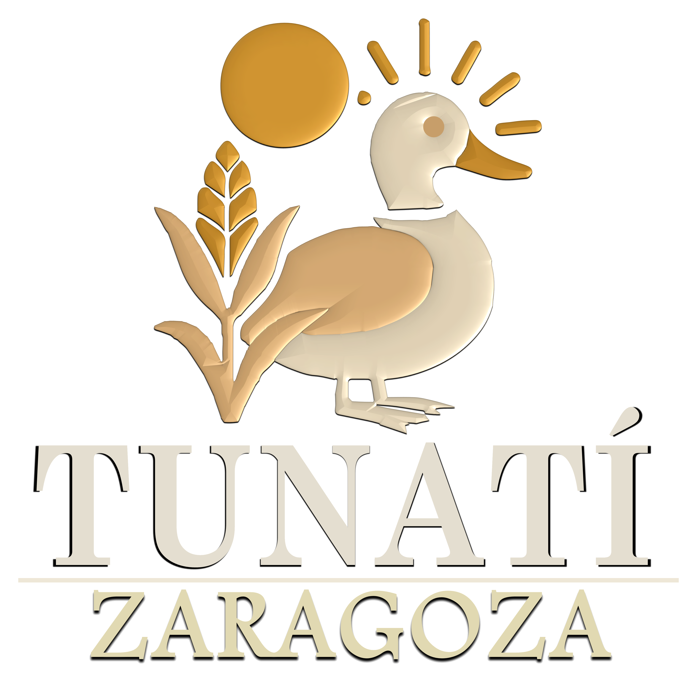
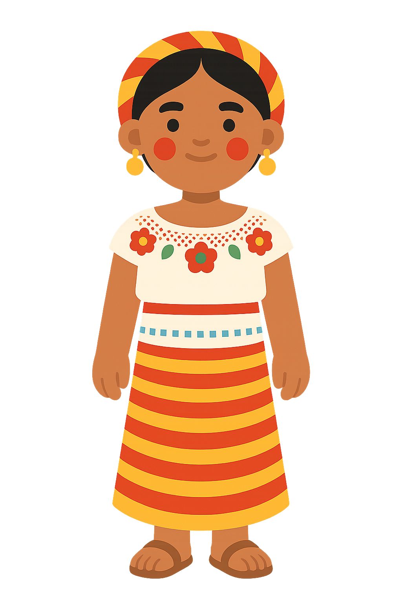
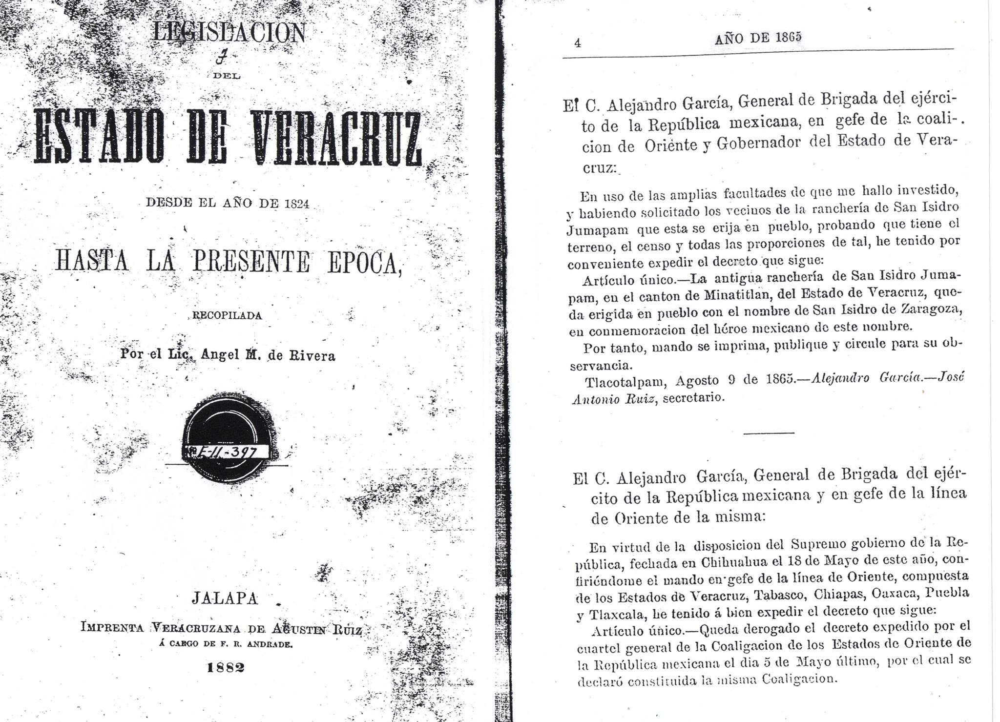
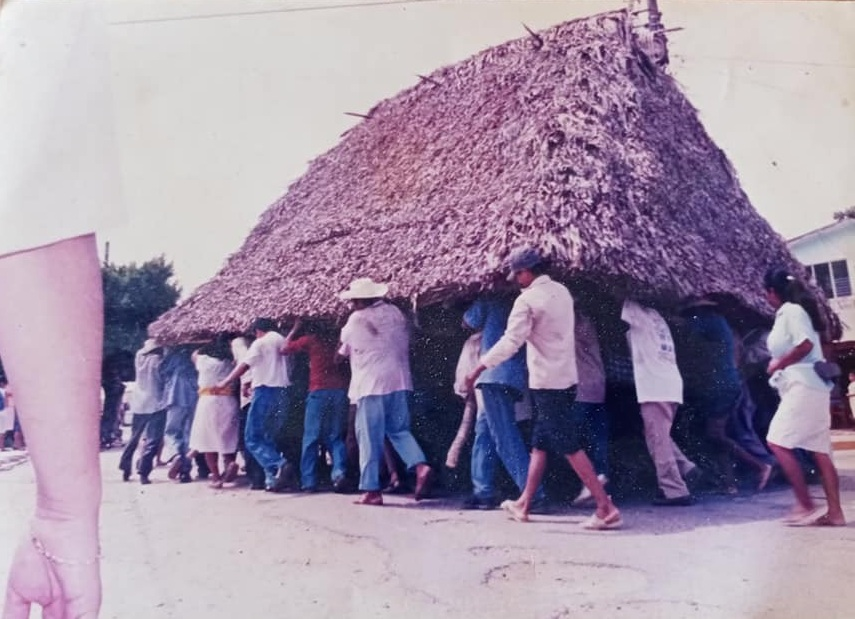
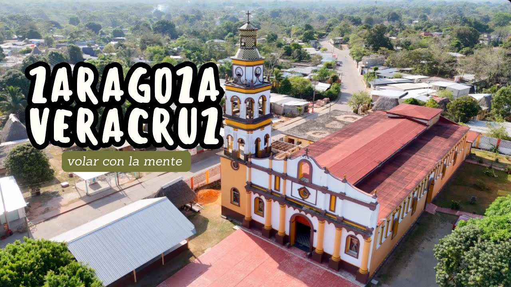
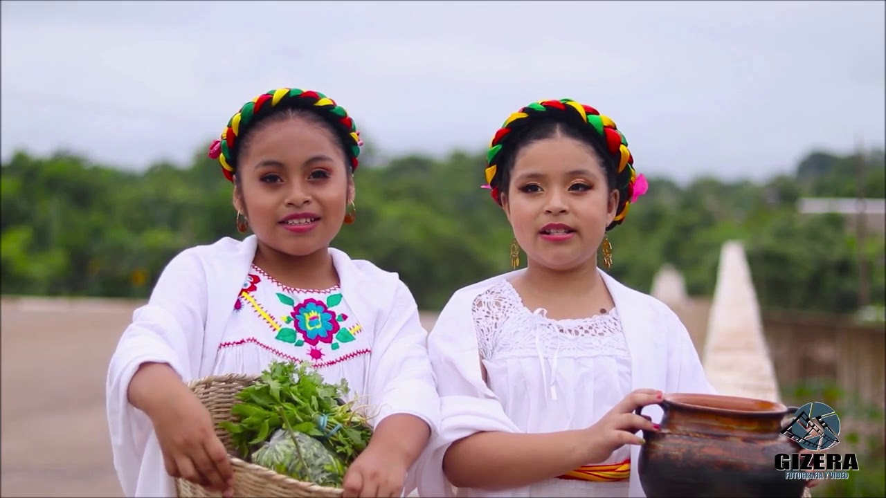
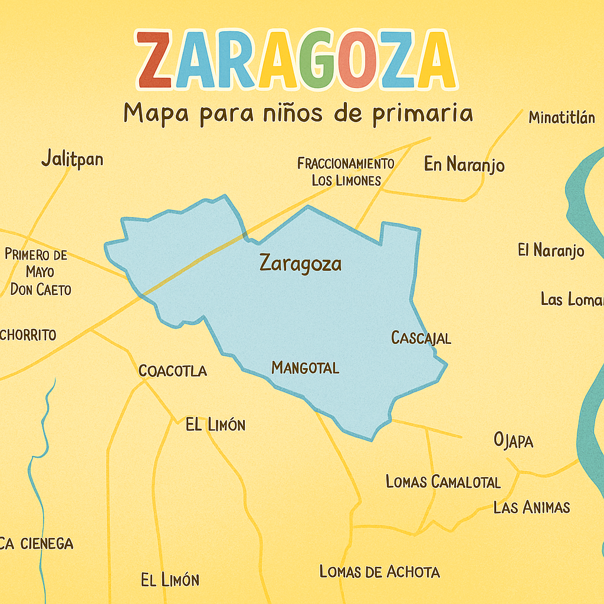
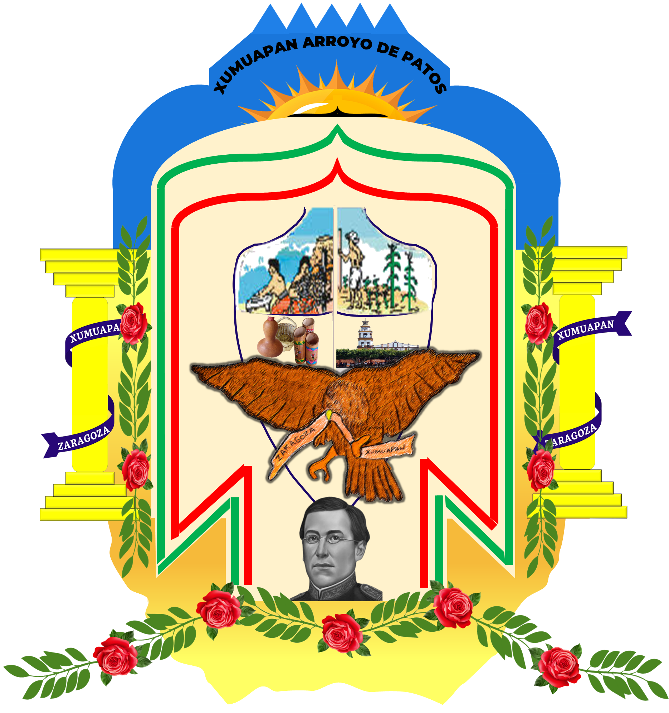

3,806
Población Económicamente Activa
44.23% de mayores de 12 años · COESPO 2015

Preservando nuestras raíces Nahua · Xumuapan

Un pueblo que mantiene vivas las tradiciones Nahuas a través de sus artesanías, su lengua, su gastronomía y cultura ancestral.
Fundación del pueblo de Zaragoza, Ver. (1865 – 2025)

Los primeros pobladores de Xumuapan llegaron a mitad del siglo XVIII. La historia oral cuenta que familias provenientes de Oteapan se asentaron en este lugar cuyo significado en nahua es "en el arroyo de los patos silvestres". El nombre se castellaniza y aparece en los primeros escritos como Jumuapan. Años después los habitantes deciden nombrarlo San Isidro Jumuapan en honor al patrono de los campesinos.
El 9 de agosto de 1865, se erige como pueblo con el nombre de San Isidro de Zaragoza. Poco después de consumada la Intervención Francesa, los nativos gestionaron ante las autoridades del Estado obtener el rango de pueblo, argumentando tener el terreno, el censo y las proporciones necesarias.
El C. ALEJANDRO GARCIA, General de brigada del ejército de la República Mexicana, en jefe de la coalición de Oriente y Gobernador del Estado de Veracruz, habiendo solicitado los vecinos de la ranchería de San Isidro Jumapan que ésta se erija en pueblo:
Artículo único. — La ranchería de San Isidro Jumapan, en el cantón de Minatitlán, del Estado de Veracruz, queda erigida en pueblo con el nombre de San Isidro de Zaragoza, en conmemoración del héroe mexicano de este nombre.
Tlacotalpan, agosto 9 de 1865. — Alejandro García · José Antonio Ruiz, secretario.
El 12 de agosto de 1932, por decreto gubernamental se suprimen los nombres de los santos en los municipios del Estado de Veracruz, quedando exclusivamente con el nombre de Zaragoza, apellido del Gral. Ignacio Zaragoza.
Dr. Antonio García de León. Investigador, historiador y Musicólogo. Originario de Jaltipan de Morelos, Veracruz.
Antropólogo Florentino Cruz Martínez. Historiador regional y cronista del Municipio de Cosoleacaque, Veracruz.
Tomado del muro de: Foro Zaragoza Ver / Facebook
La celebración que unió al pueblo en honor a su historia y su identidad nahua
En el año 2015, el municipio de Zaragoza, Veracruz, vivió uno de los momentos más emblemáticos de su historia: la celebración del 150 aniversario de su elevación a pueblo, acontecimiento que recordó su fundación oficial el 9 de agosto de 1865.
Esta conmemoración representó mucho más que una fecha simbólica; fue un acto de identidad colectiva en el que la población rindió homenaje a sus raíces, su historia y su evolución como comunidad. El nombre de Zaragoza, otorgado en honor al general Ignacio Zaragoza, héroe de la Batalla de Puebla, fue motivo de orgullo durante esta celebración.
Se fortaleció el reconocimiento de sus orígenes con nombres que reflejan la herencia indígena náhuatl que aún permanece viva en la cultura local.
Uno de los ejes principales fue la tradicional Feria en honor a San Isidro Labrador, donde la comunidad participó en actividades culturales, artísticas y religiosas. Destacó la elección de la reina de la feria, portando el traje típico y promoviendo el uso del náhuatl.
Sabiduría ancestral transmitida de generación en generación
La filosofía de solidaridad que nos define como Zaragoceños

Tapalewi es una filosofía de origen nahua que puede traducirse como "solidaridad comunitaria". Deriva del verbo náhuatl tapaleuia, que implica "ayudar a levantarse" o "levantar al otro", tanto en sentido físico como simbólico.
Se practica cotidianamente mediante actos de servicio, trabajo comunal (como el tequio), apoyo emocional y espiritual. El tapalewih era muy común en el traspaso de casas de palma, en el barro de paredes, corte de palma, y también cuando alguna mujer daba alumbramiento, le lavaban la ropa y le llevaban la comida.
Nadie se salva solo; el bienestar personal depende del bienestar común.
Ayudar al otro es una obligación ética que honra a los ancestros y a la vida.
La solidaridad se manifiesta en hechos, no sólo en palabras.
Trabajo colectivo y acompañamiento emocional y espiritual.
Se opone a la lógica individualista y consumista moderna.
Hace años cuando se compraba un cerdo se le cortaba un pedazo de su cola y se le enterraba para que acostumbrara en su nuevo hogar.
Cuando un animalito de patio no se acostumbraba con el dueño o el perro era muy bravo, se le asignaba otro dueño.
Cuando caía el pedazo de ombligo del bebé, lo colocaban en una bolsita de trapo y lo amarraban arriba de la casa de palma.
Cuando a uno se le mudaba un diente, se arrojaba en la casa de palma, porque el ratón traería un diente nuevo.
No se debe señalar al arco iris con el dedo, porque podrías tener un hijo sin dedos o sin manos.
Los sábados era el día que las mujeres lavaban totalmente sus cabellos, y todos los niños y niñas los bañaban muy bien con jabón y arena.
Ante el abuelo, abuela, padre, madre, tíos y tías se tenía que inclinar para recibir la bendición (algunos todavía lo hacen).
El tapalewih era muy común en el traspaso de casas, y cuando alguna mujer daba alumbramiento, le lavaban la ropa y le llevaban la comida.
A las visitas de "conocidos o familiares" se les ofrecía siempre café de olla y tortillas con sal, o bien comida.
A las madres no se les conocía por su nombre, sino que se les hablaba con el primer nombre de su hijo o hija más conocido, "ye Juana" / La mamá de Juana.
Estas creencias forman parte de la identidad cultural de Zaragoza
En el Estero Rabón vivía Achane, una bella mujer a la que se ofrendaban flores, incienso y velas para tener buena pesca. Se decía que su casa bajo el agua era como una gigantesca cola de iguana transparente, ¡con habitaciones y todo!
Enseñaba a respetar el agua y compartir la pesca solo con la familia.
Nació de una virgen que bebió el vino de palma sin permiso. Al nacer era un mono que sufría burlas, ¡hasta que construyó un palacio en una sola noche con ayuda de miles de monos y se convirtió en humano!
Los nahuas de la localidad de Coacotla nombraban a todo habitante de San Isidro Xumuapan como Kuaxolongo. El Dr. Antonio García de León describe que cerca del antiguo Oteapan había una localidad llamada Tacuatzinta ("lugar abundante en tacuacines"), cuyo "apodo ritual" era xolongo, proveniente de xolotl, que significa: "larva", "bebé", "monstruo". De allí deriva el gentilicio que nombraba a los nahuas de Zaragoza y Oteapan.
Los Kuaxolongo llamaban a los nahuas de Coacotla como Kuachogo. Probablemente proviene de la fisonomía relacionada con un espantapájaros que los campesinos utilizaban para ahuyentar las aves que afectaban los cultivos de maíz.
Los habitantes de Xumuapan nombraban a los nahuas de la sierra de Pajapan como Metzameh. Podría derivar de la palabra nahua Metza — "melenudo"; Metzameh significa "melenudos" en plural, característica de los hombres que con poca frecuencia se cortaban el cabello.
Del Muro de Facebook de Erasto Antonio Candelario, reconocido artesano nahua de Zaragoza.
¡Hablamos Náhuat! Una variante especial que no tiene el sonido "tl" — la misma que en Oteapan
| Nahua | Español |
|---|---|
| Ne | Yo |
| Tte | Tú |
| Ita'tzi | Papá |
| Inan'tzi | Mamá |
| Kuawi' | Árbol |
| Atl | Agua |
| Tonal | Sol / Día |
| Metztli | Luna |
| Tali | Tierra |
| Kiyawi | Lluvia |
| Matiguniga | Beber |
| Itawigalis | Canto |
| Kuahtetu | Almohada |
| Tama'xtiani | Maestro(a) |
| Ma'xtiani | Alumno(a) |
| Ista | Blanco |
| Pisti' | Negro |
| Kusti' | Amarillo |
| Tatawi' | Rojo |
| Xuxu'ti' | Verde |
| Xuxu'tzi | Azul |
| Mata' | Hamaca |
| Peta' | Petate |
| Tape'x | Cama |
| Tzuhmi | Cobija |
| Tzutzuh | Ropa / Trapo / Tela |
| Tanesi | Amanecer |
| Teuta | Tarde |
| Tayuwa | Noche |
| Tasuhkamati | Gracias |
| Pah Inuchi | Todos |
| Tahku Tunathi | Medio Día |
| Nahua | Español |
|---|---|
| Tekuani | Tigre |
| Mistu | Gato |
| Pelu | Perro |
| Piu | Pollo |
| Tupuh | Pescado |
| Tziga' | Hormiga |
| Xumu | Pato silvestre |
| Tuga' | Araña |
| Tutu' | Pájaro |
| Chagali | Camarón |
| Kuwa' | Serpiente o víbora |
| Miguh | Chango |
| Ne'tagayu' | Abeja |
| Tagayu' | Mosca |
| Kuyame' | Cochino |
| Xogi' | Caracol |
| Kalapa | Tortuga |
| Tatagatxi | Chicharra |
| Muyu' | Sancudo |
| Kala | Rana |
| Mutu | Ardilla |
| Pu'tu | Cocuyo |
| Kalachi | Cucaracha |
| Te'Pi | Pulga |
| Miñawa | Avispa |
| Migili'tzi | Luciérnagas |
| Masa' | Venado |
| Kawayu | Caballo |
| Pixixi | Pichichi |
Ita'tzi (Papá) · Inan'tzi (Mamá) · Tatzin (Abuelo) · Nantzin (Abuela) · Ikolli (Hermano mayor) · Telpokatzin (Joven)
La lengua nahua del Sur de Veracruz, variante Zaragoza, tiene 19 sonidos (fonemas): 15 consonantes y 4 vocales (a, e, i, u). La grafía h se pronuncia como una exhalación suave. El símbolo ' (saltillo) representa un cierre momentáneo de la garganta.
Fuente: Gramática Moderna Nahua del Sur de Veracruz — Andrés Hasler Hangert y Crisanto Bautista Cruz.
La vida, tradiciones y paisajes de nuestro pueblo en imágenes
Conoce nuestras tradiciones a través de estos documentales

Celebraciones culturales de la comunidad nahua

El arte nahua a través de sus manos
Conoce nuestro territorio y sus características naturales

📍 Coordenadas: Entre los paralelos 17°56' y 17°58' latitud Norte
Entre los meridianos 94°36' y 94°40' longitud Oeste
Altitud: 10 a 30 msnm · Superficie: 21.7 km²
Colindancias: Al norte con Oteapan y Cosoleacaque, al sur, este y oeste con Cosoleacaque, Jáltipan y Oteapan.
Zaragoza es un pequeño municipio al sur de Veracruz, conectado por una carretera de 4 km a Cosoleacaque. ¡Solo tiene 21.7 km² de superficie! — cabría 19 veces en la ciudad de Xalapa.
¡Aquí hace calor! El clima es cálido húmedo, con temperaturas entre 24°C y 26°C. Llueve mucho en verano y otoño (1,900 a 2,100 mm al año).
Tenemos bosques altos perennifolios y bosques tropicales caducifolios.
Zaragoza no es solo el pueblo principal, ¡tenemos 18 localidades!
💡 Dato curioso: "El Último Jalón" ¡con solo 4 habitantes en 2010!
¡Hablamos náhuatl! Una variante especial sin el sonido "tl", llamada náhuat, la misma que en Oteapan.
Descubre el legado artesanal de Zaragoza — Tradiciones que perduran
Tejeduría en telar de cintura con diseños tradicionales Nahua
AlfareríaModelado de barro para utensilios y piezas decorativas ancestrales
CesteríaArte tejido con mimbre y bejuco blanco — Tradición viva
GastronomíaSabores tradicionales que preservan la identidad culinaria Nahua
CosmogoníaVisión del mundo, espiritualidad y cosmovisión del pueblo Nahua
Sustento tradicional y oportunidades digitales para nuestra comunidad
Población Económicamente Activa
44.23% de mayores de 12 años · COESPO 2015
Superficie de Maíz
Principal cultivo del municipio
Mujeres Emprendedoras
Líderes del comercio digital
Superficie Ganadera
Segundo sector productivo
Ubicado en calle Carranza y Hermenegildo Galeana. Principal: Domingos · Secundario: Jueves
Facebook Marketplace · WhatsApp Business · Instagram Shopping
Mujeres emprendedoras que lideran el comercio digital en Zaragoza en sectores de: 💎 Belleza · 👗 Moda · 🏠 Hogar
Valoración adecuada del trabajo artesanal nahua
Condiciones laborales humanas y seguras para todos
Materiales y procesos ecológicos y responsables
Simbolismo e identidad de nuestro municipio

Representa un nuevo amanecer y la lucha por un mejor futuro para Zaragoza.
Los laureles significan victoria y lucha. Los colores verde, blanco y rojo nos identifican como mexicanos.
Representa a todos los mexicanos y zaragoceños como signo de audacia y valentía. Lleva en su pico una manta que dice "Zaragoza, Veracruz".
Dibujos de ollas de barro, cómales, canastas y vestimenta tradicional, así como una señora tejiendo un refajo.
Un campesino sembrando maíz: entre el 70% y 80% de la población son campesinos.
En la parte inferior al centro, el héroe de la patria del que el pueblo lleva su nombre.
Xomo-a-pan — "En el río de los patos"
Etimología original del nombre Xumuapan / Zaragoza
Zaragoza, Veracruz — Más de 150 años de historia
| Presidente | Período | Partido |
|---|---|---|
| C. Cristóbal Martínez | 1865-1866 | SIN PARTIDO |
| C. Domingo Bautista Santos | 1867-1868 | SIN PARTIDO |
| C. Baldomero Martínez | 1869-1870 | SIN PARTIDO |
| C. Simón de los Santos | 1871-1872 | SIN PARTIDO |
| C. Abelino Martínez | 1873-1874 | SIN PARTIDO |
| C. Atilano Ramírez Francisco | 1875-1876 | SIN PARTIDO |
| C. Espiridión Gómez Cruz | 1877-1878 | SIN PARTIDO |
| C. José Gómez Cruz | 1879-1880 | SIN PARTIDO |
| C. Julián Hernández | 1881-1882 | SIN PARTIDO |
| C. Jacinto Ignacio | 1883-1884 | SIN PARTIDO |
| C. Cutberto Martínez | 1885-1886 | SIN PARTIDO |
| C. Fermín Martínez Gómez | 1887-1888 | SIN PARTIDO |
| C. Manuel de la Cruz | 1889-1890 | SIN PARTIDO |
| C. Eulogio López García | 1891-1892 | SIN PARTIDO |
| C. Guadalupe Martínez | 1893-1894 | SIN PARTIDO |
| C. Pedro Francisco Jiménez | 1895-1896 | SIN PARTIDO |
| C. Eleuterio Hernández Pacheco | 1897-1898 | SIN PARTIDO |
| C. Marcelo Gómez | 1899-1900 | SIN PARTIDO |
| C. Antelmo Ramírez Francisco | 1901-1902 | SIN PARTIDO |
| C. Silvestre Ramírez Francisco | 1903-1904 | SIN PARTIDO |
| C. Emilio de la Cruz | 1905-1906 | SIN PARTIDO |
| C. Alberto Antonio | 1907-1908 | SIN PARTIDO |
| C. Crescencio Lara | 1909-1910 | SIN PARTIDO |
| C. Celso Ignacio | 1911-1912 | SIN PARTIDO |
| C. José P. Santos | 1913-1914 | SIN PARTIDO |
| C. Vicente Cruz Martínez | 1915-1917 | SIN PARTIDO |
| C. Simón Francisco | 1918 | SIN PARTIDO |
| C. Alberto Antonio | 1921 | SIN PARTIDO |
| C. Cresencio Lara | 1922-1923 | SIN PARTIDO |
| C. Emilio de la Cruz | 1924-1925 | SIN PARTIDO |
| C. Atilano Carlos | 1926-1927 | SIN PARTIDO |
| C. Celso Ignacio | 1928-1929 | SIN PARTIDO |
| C. Eulogio López García | 1930-1931 | SIN PARTIDO |
| C. Tomás Martínez Luría | 1932-1933 | SIN PARTIDO |
| C. José P. Santos | 1934-1935 | SIN PARTIDO |
| C. Guadalupe Martínez | 1936-1937 | SIN PARTIDO |
| C. Espiridión Martínez | 1938-1939 | SIN PARTIDO |
| C. Pedro Francisco Jiménez | 1940-1941 | SIN PARTIDO |
| C. Marcelo Gómez Cruz | 1942-1943 | SIN PARTIDO |
| C. Julián Hernández | 1944 | SIN PARTIDO |
| C. Fermín P. Martínez | 1945-1946 | SIN PARTIDO |
| C. Tomás Martínez Luría | 1947-1949 | SIN PARTIDO |
| C. Silvestre Ramírez Francisco | 1950-1952 | SIN PARTIDO |
| C. Pedro Francisco Jiménez | 1953-1955 | SIN PARTIDO |
| C. Eleuterio Hernández Pacheco | 1955-1958 | SIN PARTIDO |
| C. Marcelo Gómez Cruz | 1958-1961 | SIN PARTIDO |
| C. Silvestre Ramírez Francisco | 1961-1964 | SIN PARTIDO |
| C. Vicente Cruz Martínez | 1964-1967 | SIN PARTIDO |
| C. Antelmo Ramírez Francisco | 1967-1970 | SIN PARTIDO |
| C. Vicente Cruz Martínez | 1970-1973 | SIN PARTIDO |
| Lic. Abraham Martínez Cruz | 1973-1975 | SIN PARTIDO |
| C. Manuel Monlui González (Concejo) | 1975-1976 | SIN PARTIDO |
| C. Tomás Cruz Cruz | 1976-1979 | SIN PARTIDO |
| C. Dionisio López Santos | 1979-1982 | SIN PARTIDO |
| C. Jesús Hernández Cruz | 1982-1985 | SIN PARTIDO |
| C. Narciso Gómez Antonio | 1985-1988 | PPS |
| C. Alejandro Martínez Martínez | 1988-1991 | PRI |
| C. Conrado Cruz Antonio | 1992-1994 | PRD |
| C. Arsenio Sergio Cruz López | 1995-1997 | PRD |
| C. Eucario de los Santos Cruz | 1998-2000 | PRD |
| C. Ramón Mateo Santiago | 2001-2004 | PRI |
| C. María Antonia Salomé Santiago | 2005-2007 | PRI |
| C. Miguel Ángel Grajales Martínez | 2008-2010 | PRI |
| Ing. Eleuterio Hernández Martínez | 2011-2013 | PRD |
| C. Gabino Francisco Martínez | 2014-2017 | PRD |
| C. Minerva | 2018-2021 | PRD |
| C. Miguel Ángel Grajales Martínez | 2022-2025 | FUERZA POR MEXICO |
| Lic. Miguel Ángel Grajales Mateo | 2025— | INDEPENDIENTE |
Herramientas digitales útiles para el aprendizaje
Descarga mapas del INEGI para tus proyectos y estudios geográficos.
Ir a INEGI MapasVariedad de materiales didácticos y actividades para docentes.
Explorar ProferecursosMotor de conocimiento computacional para resolver problemas en diversas áreas.
Usar Wolfram AlphaEncuentra imágenes PNG con fondo transparente para tus diseños.
Buscar en PNGEggPágina para maestros y padres de familia, con material didáctico variado.
Mundo de RukkiaCrea paletas de colores armoniosas para tus proyectos de diseño.
Generar en CoolorsEscríbenos, visítanos o síguenos en redes sociales
Nacional #1 Zaragoza, Veracruz
9221224111
tunatizaragoza@gmail.com